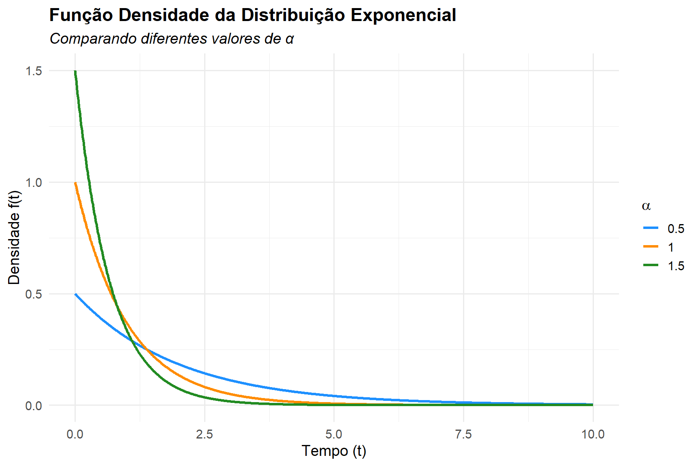
MODELOS PARAMÉTRICOS DE SOBREVIVÊNCIA/CONFIABILIDADE
Universidade Federal Fluminense
Apesar de úteis, os métodos não paramétricos apresentam limitações:
Principais dificuldades:
Surge então uma questão central:
Para responder isso:
Vamos seguir uma estratégia em duas etapas:
Etapa 1: Modelar o tempo \(T\)
Etapa 2: Incluir covariáveis
A variável \(T\) representa:
Características de \(T\): Contínua e Não negativa
Portanto, distribuições como a Normal e Binomial Não são adequadas aqui.
Na prática, os dados apresentam:
Ou seja:
Em análise de sobrevivência e confiabilidade, existem diversos modelos probabilísticos possíveis
No entanto, alguns modelos se destacam por sua boa adequação prática
Um ponto fundamental:
Consequência importante:
Portanto, entender a estrutura de cada modelo é essencial
Vamos considerar um estudo com pacientes com câncer de bexiga
Interesse:
Dados observados (em meses):
Importante:
Ou seja:
Diferentes respostas para o comportamento do risco levam a:
Por exemplo:
Portanto, escolher um modelo é escolher como o risco se comporta
Nosso objetivo: encontrar uma distribuição que represente bem os dados
Próximo passo: estudar essas distribuições e suas interpretações
Em termos matemáticos:
Consideramos \(T \sim \text{Exponencial}(\alpha)\)
A função densidade é: \[f(t) = \alpha e^{-\alpha t}\]
Onde:

Interpretação do parâmetro \(\alpha\): controla a velocidade de ocorrência do evento
Comparando diferentes valores de \(\alpha\):
| \(\alpha\) | Comportamento da densidade |
|---|---|
| 0.5 | Densidade mais espalhada, eventos tendem a ocorrer mais lentamente |
| 1 | Decaimento moderado da densidade ao longo do tempo |
| 1.5 | Densidade mais concentrada em tempos pequenos, eventos ocorrem mais cedo |
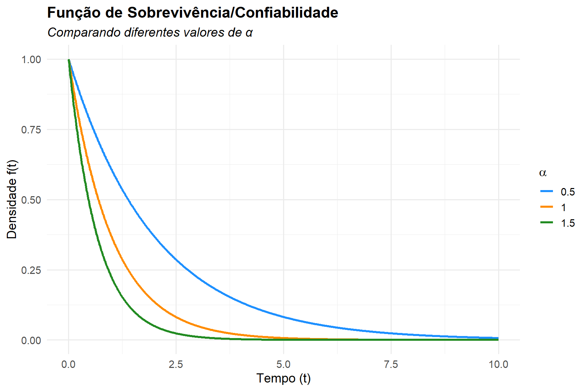
Interpretação do parâmetro \(\alpha\): controla a velocidade de queda da função de sobrevivência
Comparando diferentes valores de \(\alpha\):
| \(\alpha\) | Comportamento da função \(S(t)\) |
|---|---|
| 0.5 | Sobrevivência mais lenta, grande proporção de indivíduos ainda sobrevivem em tempos longos |
| 1 | Queda moderada da sobrevivência ao longo do tempo |
| 1.5 | Sobrevivência rápida, poucos indivíduos permanecem vivos por muito tempo |
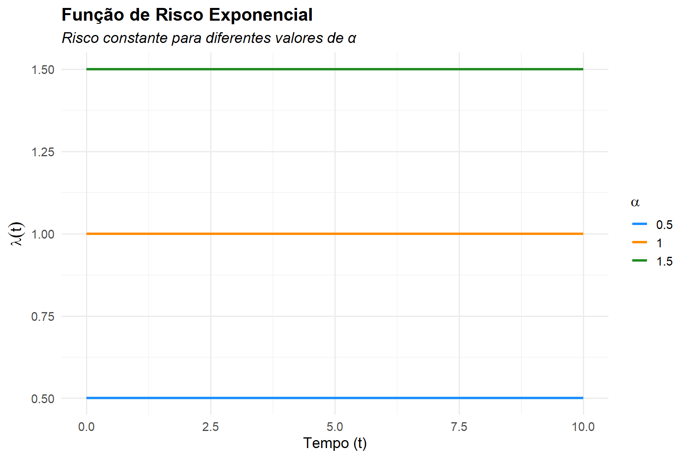
Resultado fundamental: o risco é constante ao longo do tempo
Consequência do risco constante:
Um indivíduo que sobreviveu até \(t\):
Essa propriedade é chamada de falta de memória
Ou seja, o passado não influencia o futuro
Interpretação do parâmetro \(\alpha\): controla a taxa de ocorrência do evento
Comparando diferentes valores de \(\alpha\):
| \(\alpha\) | Comportamento da função de risco \(\lambda(t)\) |
|---|---|
| 0.5 | Risco baixo e constante, eventos ocorrem lentamente |
| 1 | Risco moderado e constante, decaimento intermediário |
| 1.5 | Risco alto e constante, eventos ocorrem rapidamente |
\[ \Lambda(t) = \int_0^t \lambda(u) \, du = \int_0^t \alpha \, du = \alpha t \]
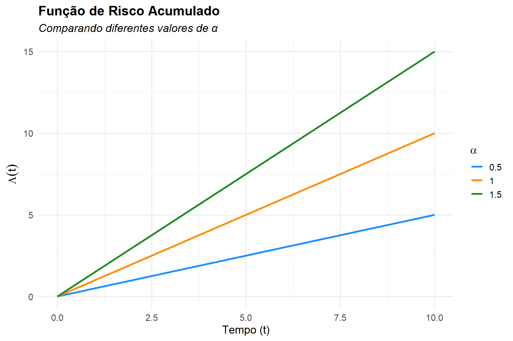
| \(\alpha\) | Comportamento da função \(\Lambda(t)\) |
|---|---|
| 0.5 | Crescimento lento e linear, risco acumulado baixo |
| 1 | Crescimento moderado e linear, risco acumulado médio |
| 1.5 | Crescimento rápido e linear, risco acumulado alto |
O percentil de ordem \(p\) é o valor \(t_p\) tal que \(P(T \le t_p) = p\)
Para a distribuição exponencial: \[ t_p = -\frac{\log(1-p)}{\alpha} \]
Exemplo: Mediana (\(p = 0.5\)): \(t_{0.5} =\frac{\log(2)}{\alpha}\)
| \(\alpha\) | Mediana |
|---|---|
| 0.5 | \(\frac{\log(2)}{0.5} \approx 1.386\) |
| 1 | \(\log(2) \approx 0.693\) |
| 1.5 | \(\frac{\log(2)}{1.5} \approx 0.462\) |
O tempo médio até o evento é: \[ E(T) = \frac{1}{\alpha} \]
Comparando diferentes valores de \(\alpha\):
| \(\alpha\) | Tempo médio \(E(T)\) |
|---|---|
| 0.5 | 2 |
| 1 | 1 |
| 1.5 | \(\approx 0.667\) |
O tempo médio residual é \(E(T - t \mid T > t)\)
Para a distribuição exponencial: \(E(T - t \mid T > t) = \frac{1}{\alpha}\)
Comparando diferentes valores de \(\alpha\):
| \(\alpha\) | Tempo médio residual |
|---|---|
| 0.5 | 2 |
| 1 | 1 |
| 1.5 | \(\approx 0.667\) |
Pelo fato da distribuição exponencial ser expressa por um único parâmetro, ela é matematicamente a mais simples nos modelos de sobrevivência
Assumir um modelo exponencial é análogo ao uso da normal em outras áreas:
→ uma aproximação inicial que facilita a modelagem e a interpretação
No caso dos dados de câncer de bexiga, essa suposição implica que:
→ o tempo desde o tratamento ou diagnóstico não altera o risco de recorrência ou óbito
Ou seja:
→ o indivíduo tem o mesmo risco hoje, daqui a um mês ou daqui a anos
Essa propriedade é conhecida como:
→ falta de memória (o passado não influencia o futuro)
Essa suposição de risco constante é, em geral, pouco plausível em estudos clínicos
No câncer de bexiga, é comum observar que:
→ o risco de recorrência é mais alto nos primeiros períodos após o tratamento
→ e pode mudar ao longo do tempo
Além disso, fatores como:
→ progressão da doença, resposta ao tratamento e envelhecimento
→ fazem o risco variar ao longo do tempo
Portanto, o modelo exponencial pode ser simplista demais para descrever a realidade
Ainda assim, ele é útil como:
→ modelo inicial de comparação
→ aproximação em intervalos curtos de tempo
→ base para modelos mais flexíveis (como Weibull)
Em geral, funciona melhor quando o risco pode ser considerado aproximadamente constante em um intervalo curto
A distribuição Weibull surgiu como uma generalização natural da exponencial
→ permitindo modelar situações mais realistas em sobrevivência e confiabilidade.
Popularizada por Waloddi Weibull (1951) em estudos de confiabilidade:
Diferentemente da distribuição exponencial:
A distribuição Weibull generaliza a exponencial:
Consideramos \(T \sim \text{Weibull}(\kappa, \gamma)\)
A função densidade é: \[ f(t) = \frac{\gamma}{\kappa} \left(\frac{t}{\kappa}\right)^{\gamma - 1} e^{-(t/\kappa)^\gamma} \]
Onde:
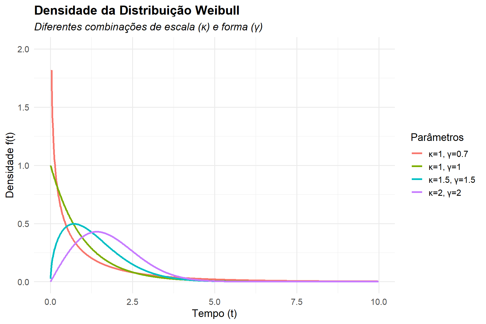
Interpretação dos parâmetros:
| \(\kappa, \gamma\) | Comportamento |
|---|---|
| (1, 0.9) | Alta densidade no início → falhas precoces |
| (1, 1) | Decaimento exponencial → risco constante |
| (2, 2) | Pico intermediário → eventos após certo tempo |
| (2, 3) | Pico mais tardio e concentrado → eventos mais previsíveis |
\[ S(t) = P(T \geq t) = \exp\left\{-(t/\kappa)^\gamma\right\} \]
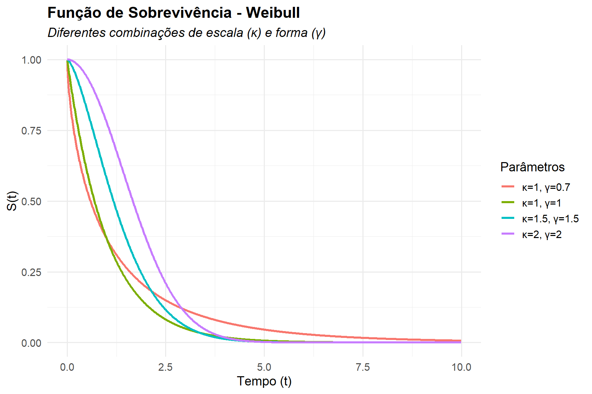
Interpretação dos parâmetros:
| \(\kappa, \gamma\) | Comportamento da função \(S(t)\) |
|---|---|
| (1, 0.7) | Sobrevivência mais lenta no início |
| (1, 1) | Queda exponencial (referência) |
| (2, 2) | Queda mais acentuada após algum tempo |
| (2, 3) | Sobrevivência alta no início e queda abrupta depois |
\[ \lambda(t) = \frac{f(t)}{S(t)} = \frac{\gamma}{\kappa} \left(\frac{t}{\kappa}\right)^{\gamma - 1}, \quad t \ge 0 \]
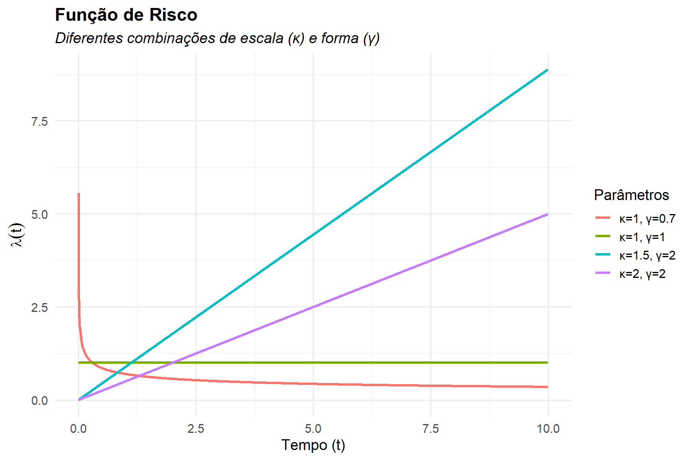
Resultado fundamental: o risco não é constante ao longo do tempo
O comportamento do risco depende de \(\gamma\):
Consequência:
Um indivíduo que sobreviveu até \(t\):
Portanto:
Ou seja:
Interpretação dos parâmetros:
| \(\kappa, \gamma\) | Comportamento da função \(\lambda(t)\) |
|---|---|
| (1, 0.9) | Risco decrescente ao longo do tempo |
| (1, 1) | Risco constante (exponencial) |
| (2, 2) | Risco crescente com o tempo |
| (2, 3) | Risco cresce rapidamente → envelhecimento acentuado |
\[ \Lambda(t) = (\gamma t)^{\kappa} \]
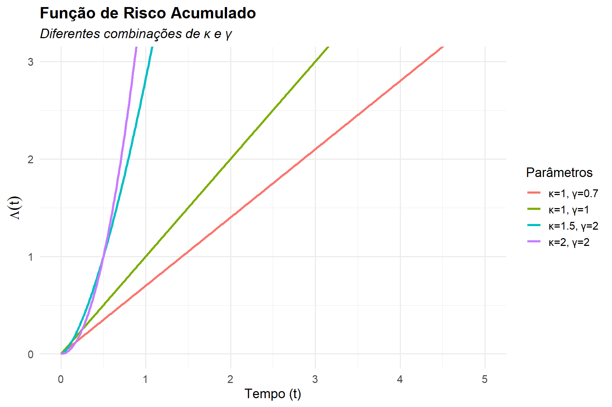
Interpretação dos parâmetros:
\(\kappa\) (forma):
\(\gamma\) (escala):
Resumo visual:
| \(\kappa\) | \(\gamma\) | Comportamento |
|---|---|---|
| 1 | 0.7 | Crescimento linear mais lento |
| 1 | 1 | Crescimento linear padrão |
| 1.5 | 1.5 | Crescimento acelerado |
| 2 | 2 | Crescimento muito acelerado |
O percentil de ordem \(p\) é o valor \(t_p\) tal que \(P(T \le t_p) = p\)
Para a distribuição Weibull: \[ t_p = \frac{\left[-\log(1-p)\right]^{1/\kappa}}{\gamma} \]
Exemplo: Mediana (\(p = 0.5\)):
\[ t_{0.5} = \frac{(\log 2)^{1/\kappa}}{\gamma} \]
| \(\kappa\) | \(\gamma\) | Mediana |
|---|---|---|
| 1 | 0.7 | \(\frac{\log(2)}{0.7} \approx 0.99\) |
| 1 | 1 | \(\log(2) \approx 0.693\) |
| 1.5 | 1.5 | \(\frac{(\log 2)^{2/3}}{1.5} \approx 0.52\) |
| 2 | 2 | \(\frac{\sqrt{\log 2}}{2} \approx 0.42\) |
| \(\kappa\) | \(\gamma\) | Tempo médio \(E(T)\) |
|---|---|---|
| 1 | 0.7 | \(\approx 1.43\) |
| 1 | 1 | \(1\) |
| 1.5 | 1.5 | \(\approx 0.60\) |
| 2 | 2 | \(\approx 0.44\) |
O tempo médio residual é: \[ E(T - t \mid T > t) \]
Para a distribuição Weibull, não é constante:
Depende do tempo já vivido \(t\)
Interpretação:
Diferente da exponencial:
O tempo restante esperado:
Intuição:
\(\kappa > 1\) (risco crescente):
\(\kappa < 1\) (risco decrescente):
A distribuição lognormal surge quando o logaritmo do tempo segue uma distribuição normal
→ isto é, \(\log(T) \sim \mathcal{N}(\mu, \sigma^2)\)
Muito utilizada para modelar tempos que:
Diferentemente da distribuição exponencial:
Por que ela é tão utilizada?
Modela bem dados com:
Permite:
A distribuição lognormal é definida por:
Consideramos \(T \sim \text{Lognormal}(\mu, \sigma)\)
A função densidade é: \[ f(t) = \frac{1}{t \, \sigma \sqrt{2\pi}} \exp\left(-\frac{(\log t - \mu)^2}{2\sigma^2}\right) \]
Onde:
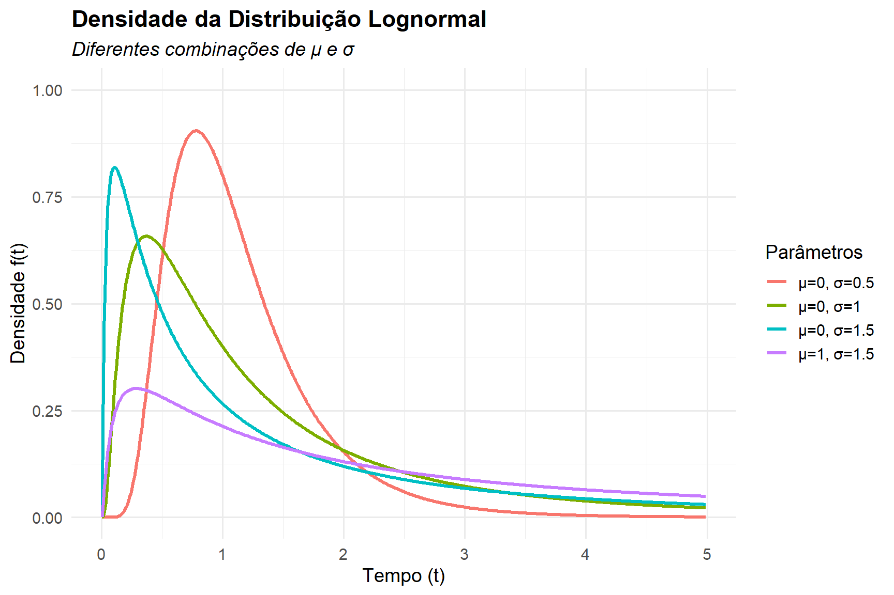
Interpretação dos parâmetros:
\(\mu\) (posição na escala log):
\(\sigma\) (dispersão):
| \(\mu, \sigma\) | Comportamento |
|---|---|
| (0, 0.3) | Pico alto e concentrado → eventos bem previsíveis |
| (0, 0.7) | Mais dispersão → maior variabilidade |
| (0.5, 1) | Cauda longa → eventos podem ocorrer bem mais tarde |
| (1, 0.5) | Deslocamento à direita → eventos mais tardios |
\[ S(t) = P(T \geq t) = 1 - \Phi\left(\frac{\log t - \mu}{\sigma}\right) \]
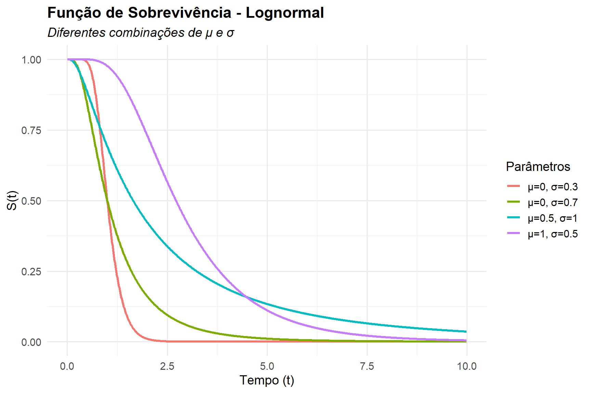
Interpretação dos parâmetros:
\(\mu\) (posição na escala log):
\(\sigma\) (dispersão):
| \(\mu, \sigma\) | Comportamento da função \(S(t)\) |
|---|---|
| (0, 0.3) | Queda rápida e concentrada → eventos mais previsíveis |
| (0, 0.7) | Queda mais gradual → maior variabilidade |
| (0.5, 1) | Sobrevivência prolongada com cauda longa |
| (1, 0.5) | Deslocamento à direita → eventos mais tardios |
\[ \lambda(t) = \frac{f(t)}{S(t)} = \frac{\frac{1}{t \, \sigma \sqrt{2\pi}} \exp\left(-\frac{(\log t - \mu)^2}{2\sigma^2}\right)} {1 - \Phi\left(\frac{\log t - \mu}{\sigma}\right)} \]
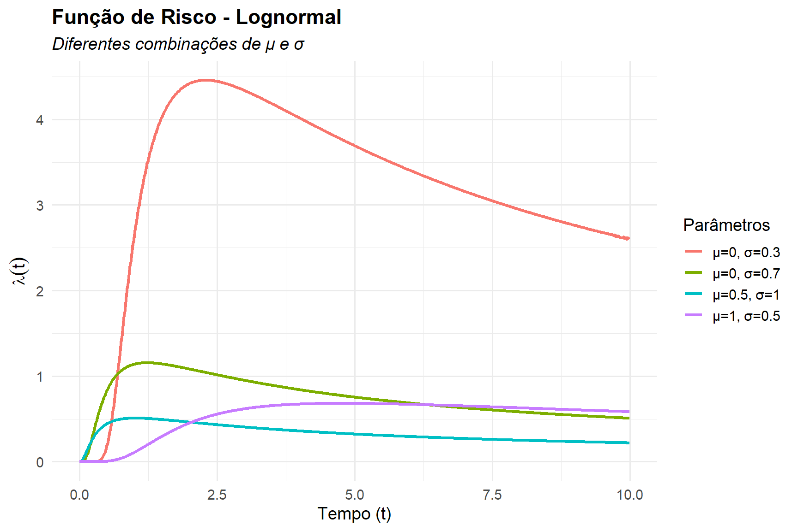
Resultado fundamental: o risco tem formato não monótono
Tipicamente:
Consequência:
Um indivíduo que sobreviveu até \(t\):
Portanto:
Ou seja:
Interpretação dos parâmetros:
\(\mu\) (posição):
\(\sigma\) (dispersão):
| \(\mu, \sigma\) | Comportamento da função \(\lambda(t)\) |
|---|---|
| (0, 0.3) | Pico alto e estreito → risco concentrado |
| (0, 0.7) | Pico mais suave → risco mais distribuído |
| (0.5, 1) | Pico tardio e largo → eventos ao longo do tempo |
| (1, 0.5) | Pico deslocado para a direita |
\[ \Lambda(t) = -\log\left[S(t)\right] = -\log\left(1 - \Phi\left(\frac{\log t - \mu}{\sigma}\right)\right) \]
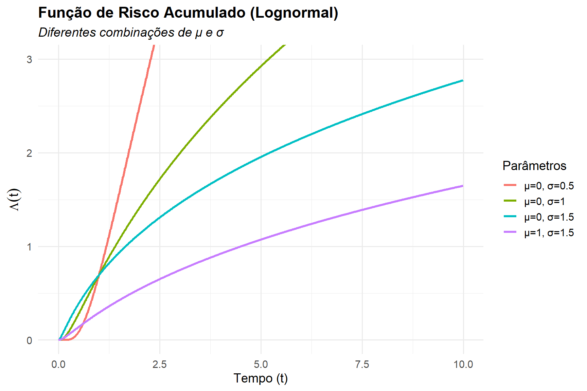
Interpretação dos parâmetros:
\(\mu\) (posição):
\(\sigma\) (dispersão):
| \(\mu\) | \(\sigma\) | Comportamento |
|---|---|---|
| 0 | 0.3 | Crescimento rápido e concentrado |
| 0 | 0.7 | Crescimento mais gradual |
| 0.5 | 1 | Crescimento lento com cauda longa |
| 1 | 0.5 | Crescimento deslocado no tempo |
O percentil de ordem \(p\) é o valor \(t_p\) tal que \(P(T \le t_p) = p\)
Para a distribuição lognormal: \[ t_p = \exp\left(\mu + \sigma \, z_p\right) \]
onde \(z_p = \Phi^{-1}(p)\) é o quantil da normal padrão
\[ t_{0.5} = \exp(\mu) \]
| \(\mu\) | \(\sigma\) | Mediana |
|---|---|---|
| 0 | 0.3 | \(1\) |
| 0 | 0.7 | \(1\) |
| 0.5 | 1 | \(\approx 1.65\) |
| 1 | 0.5 | \(\approx 2.72\) |
| \(\mu\) | \(\sigma\) | Tempo médio \(E(T)\) |
|---|---|---|
| 0 | 0.3 | \(\approx 1.05\) |
| 0 | 0.7 | \(\approx 1.28\) |
| 0.5 | 1 | \(\approx 2.72\) |
| 1 | 0.5 | \(\approx 3.08\) |
O tempo médio residual é: \[ E(T - t \mid T > t) \]
Para a distribuição lognormal, não é constante
Depende do tempo já vivido \(t\)
Interpretação:
Não possui propriedade de falta de memória
O tempo restante esperado:
Intuição:
A lognormal possui:
Assim:
A distribuição Gama é uma generalização da exponencial
→ surge como soma de tempos de espera independentes
Consideramos \(T \sim \text{Gama}(\alpha, \beta)\), onde:
Por que ela é tão utilizada?
Permite:
Inclui a exponencial como caso particular:
Seja \(T \sim \text{Gama}(\alpha, \beta)\)
A função densidade é: \[ f(t) = \frac{\beta^\alpha}{\Gamma(\alpha)} t^{\alpha - 1} e^{-\beta t} \]
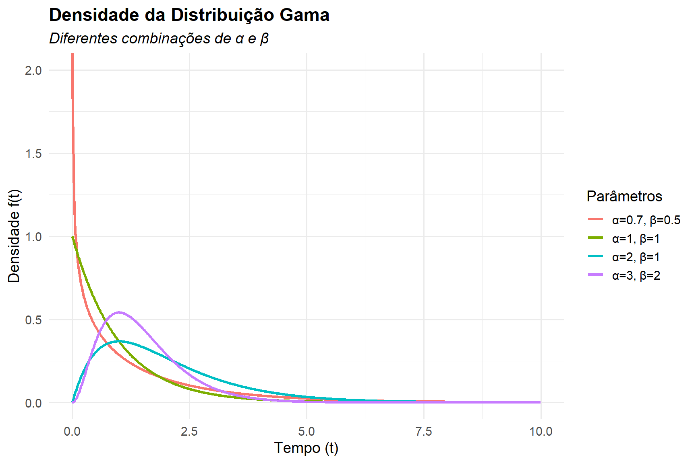
Interpretação dos parâmetros:
\(\alpha\) (forma):
\(\beta\) (taxa):
| \(\alpha, \beta\) | Comportamento |
|---|---|
| (0.7, 0.5) | Alta no início → muitos eventos precoces |
| (1, 1) | Caso exponencial → risco constante |
| (2, 1) | Pico moderado → eventos mais concentrados |
| (3, 2) | Pico mais acentuado e deslocado → eventos mais rápidos e concentrados |
\[ S(t) = P(T \geq t) = 1 - F(t) \]
Para a distribuição Gama: \[ S(t) = 1 - \frac{\gamma(\alpha, \beta t)}{\Gamma(\alpha)} \]
Onde:
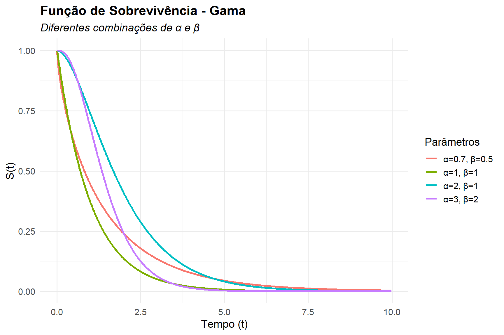
Interpretação dos parâmetros:
\(\alpha\) (forma):
\(\beta\) (taxa):
| \(\alpha, \beta\) | Comportamento da função \(S(t)\) |
|---|---|
| (0.7, 0.5) | Queda rápida no início → muitos eventos precoces |
| (1, 1) | Queda exponencial (referência) |
| (2, 1) | Sobrevivência mais alta no início |
| (3, 2) | Queda mais acentuada após algum tempo |
\[ \lambda(t) = \frac{f(t)}{S(t)} = \frac{\frac{\beta^\alpha}{\Gamma(\alpha)} t^{\alpha - 1} e^{-\beta t}} {1 - F(t)} \]
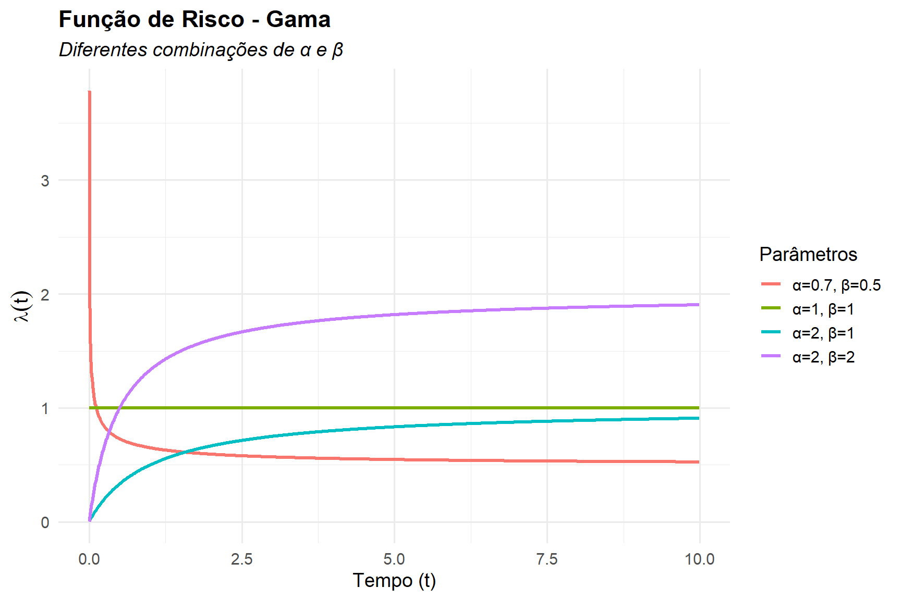
Resultado fundamental: o risco pode ser monótono ou não, dependendo de \(\alpha\)
Tipicamente:
Consequência:
Um indivíduo que sobreviveu até \(t\):
Portanto:
Ou seja:
Interpretação dos parâmetros:
\(\alpha\) (forma):
\(\beta\) (taxa):
| \(\alpha, \beta\) | Comportamento da função \(\lambda(t)\) |
|---|---|
| (0.7, 0.5) | Risco alto no início e depois decrescente |
| (1, 1) | Risco constante (exponencial) |
| (2, 1) | Risco crescente ao longo do tempo |
| (3, 2) | Risco cresce mais rapidamente |
\[ \Lambda(t) = -\log\left[S(t)\right] \]
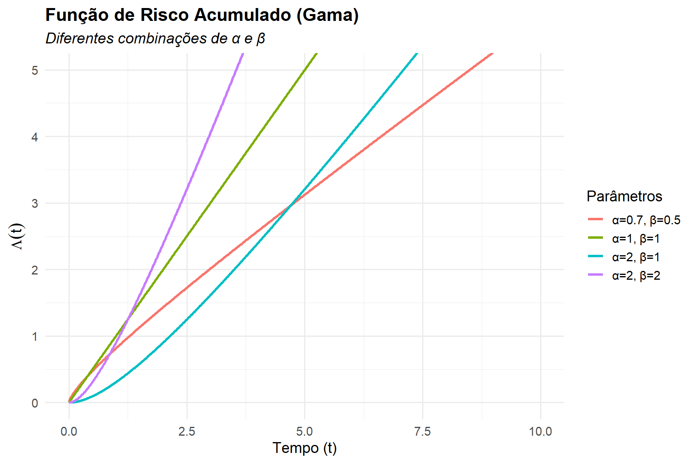
Interpretação dos parâmetros:
\(\alpha\) (forma):
\(\beta\) (taxa):
| \(\alpha\) | \(\beta\) | Comportamento |
|---|---|---|
| 0.7 | 0.5 | Crescimento rápido no início |
| 1 | 1 | Crescimento linear (exponencial) |
| 2 | 1 | Crescimento mais lento no início |
| 3 | 2 | Crescimento mais acelerado ao longo do tempo |
O percentil de ordem \(p\) é o valor \(t_p\) tal que \(P(T \le t_p) = p\)
Para a distribuição Gama: \[ t_p = F^{-1}(p) \]
Não possui forma fechada simples
→ obtido numericamente
\[ t_{0.5} = F^{-1}(0.5) \]
| \(\alpha\) | \(\beta\) | Mediana (aprox.) |
|---|---|---|
| 0.7 | 0.5 | \(\approx 0.80\) |
| 1 | 1 | \(\approx 0.69\) |
| 2 | 1 | \(\approx 1.68\) |
| 3 | 2 | \(\approx 1.34\) |
| \(\alpha\) | \(\beta\) | Tempo médio \(E(T)\) |
|---|---|---|
| 0.7 | 0.5 | \(1.4\) |
| 1 | 1 | \(1\) |
| 2 | 1 | \(2\) |
| 3 | 2 | \(1.5\) |
O tempo médio residual é: \[ E(T - t \mid T > t) \]
Para a distribuição Gama, não é constante
Depende do tempo já vivido \(t\)
Interpretação:
Não possui propriedade de falta de memória
O tempo restante esperado:
Intuição:
\(\alpha > 1\) (risco crescente):
\(\alpha < 1\) (risco decrescente):
Seja \(X > 0\), com parâmetros:
\[ f(x \mid a,b,k) = \frac{b}{\Gamma(k)\, a^{bk}} \, x^{bk - 1} \exp\left[-\left(\frac{x}{a}\right)^b\right] \]
Ideia central:
Um modelo com três parâmetros que amplia a flexibilidade das distribuições usuais
\[ f(x) = \frac{b}{a^b} x^{b-1} \exp\left[-\left(\frac{x}{a}\right)^b\right] \]
\[ f(x) = \frac{1}{a} \exp(-x/a) \]
\[ f(x) = \frac{1}{\Gamma(k)\, a^k} x^{k-1} e^{-x/a} \]
A lognormal não é um caso direto, mas:
Pode ser obtida como um caso limite da Gama Generalizada
Ideia:
Quando \(b \to 0\) (com reparametrização adequada), a GG tende à lognormal
Interpretação:
A GG conecta:
Resultado:
Grande capacidade de adaptação a diferentes padrões de dados
Na prática, não sabemos qual modelo é o correto:
Estratégia moderna:
Ajustar um modelo mais geral → Gama Generalizada
Depois verificar:
\(k = 1\) → Weibull
\(b = 1\) → Gama
\(k = 1\) e \(b = 1\) → Exponencial
Ou seja:
Ela permite que os dados indiquem o modelo mais adequado
A GG permite modelar:
✔ Risco crescente
✔ Risco decrescente
✔ Risco não monótono
Isso é essencial em:
Comparação:
Weibull → flexível, mas limitada
GG → muito mais abrangente
A Gama Generalizada:
✔ Possui três parâmetros: \(a\), \(b\), \(k\)
✔ Inclui:
✔ Principal vantagem:
Serve como ferramenta de seleção de modelo
Mensagem-chave para os alunos:
Em vez de escolher um modelo específico, podemos começar com a GG e deixar os dados guiarem a escolha
Motivação:
Nem sempre o risco segue um padrão simples
Precisamos de modelos que capturem dinâmicas mais complexas
Gompertz
Função de risco:
Muito usado em:
Log-logística
Característica principal:
Interpretação:
Risco:
Modelos de mistura (mixture models)
Ideia:
A população é composta por subgrupos não observados
Exemplo:
Parte dos indivíduos:
Outra parte:
Consequência:
A função de sobrevivência pode ter caudas longas
Modelo com risco em forma de banheira
Risco:
Confiabilidade (engenharia)
Fases:
Use modelos mais simples quando:
✔ O risco é monotônico
(ex: Weibull)
Use modelos mais flexíveis quando:
✔ Há evidência de:
Mensagem final:
O modelo deve refletir o mecanismo gerador dos dados, não apenas o ajuste estatístico